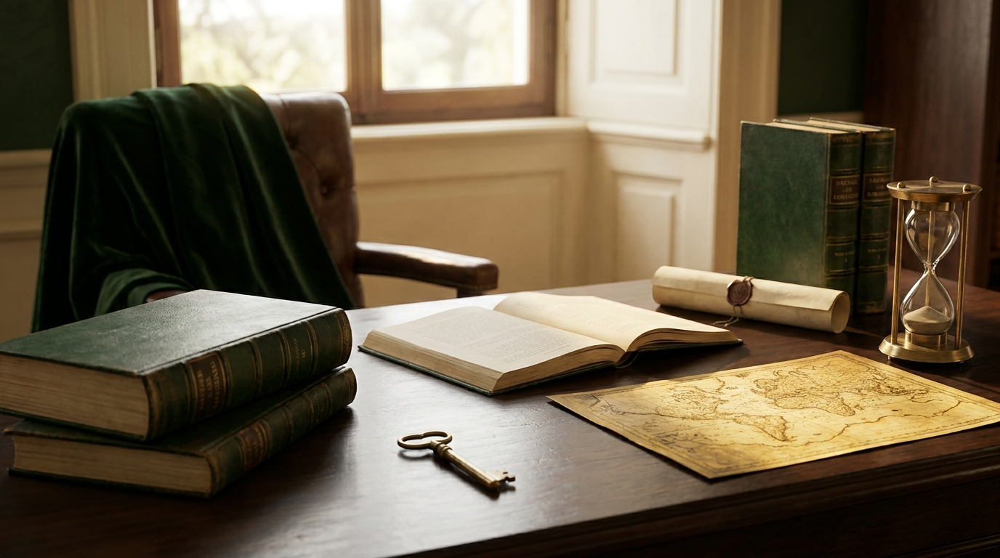

Provvigione all'agente immobiliare anche senza completare la trattativa
La Corte di Cassazione ribadisce un principio destinato a incidere su molte controversie tra mediatori e clienti: la provvigione spetta all'agente immobiliare anche quando non segue la trattativa fino alla firma, purché abbia messo in contatto le parti e quel contatto sia stato la causa dell'affare. Vediamo presupposti e limiti.

Il caso e il principio affermato
La questione è ricorrente nella pratica: l'agente immobiliare presenta acquirente e venditore, poi le parti proseguono per conto proprio e concludono il contratto. A trattativa chiusa, il cliente contesta la provvigione sostenendo che l'agente non ha "seguito" tutta la negoziazione.
La Corte di Cassazione ha chiarito che questa obiezione, da sola, non basta a escludere il compenso. Ciò che conta è il nesso causale tra l'attività del mediatore e la conclusione dell'affare. Se l'agente ha messo in relazione due soggetti che prima non si conoscevano, e quel contatto ha reso possibile l'accordo, il diritto alla provvigione sorge anche in assenza di una partecipazione attiva alle fasi successive.
Inquadramento normativo
Il riferimento è l'art. 1755 del Codice civile, secondo cui il mediatore ha diritto alla provvigione da ciascuna delle parti «se l'affare è concluso per effetto del suo intervento».
La norma non richiede che il mediatore segua l'intera trattativa né che partecipi alla stipula. Richiede un elemento più circoscritto: che l'affare sia stato concluso *per effetto* del suo intervento. La giurisprudenza intende questo "intervento" in senso ampio. È sufficiente la cosiddetta messa in relazione delle parti: l'attività con cui l'agente fa incontrare interessi che, senza la sua opera, non si sarebbero incrociati.
Non rileva, quindi, che dopo il primo contatto le parti abbiano negoziato da sole, mutato le condizioni o impiegato tempo prima di firmare. Decisivo è che l'affare concluso sia riconducibile, in via causale, all'iniziativa iniziale del mediatore.
Quando invece la provvigione non spetta
Il principio ha limiti precisi. Il diritto al compenso si esclude quando manca il nesso causale, cioè quando l'affare nasce da un canale del tutto autonomo rispetto all'intervento dell'agente.
Esempi tipici: l'acquirente conosceva già il venditore per altra via; la trattativa segnalata dall'agente si è interrotta e l'affare è stato poi concluso a distanza di tempo su basi e tramiti diversi; l'immobile compravenduto è diverso da quello proposto. In questi casi il collegamento tra l'attività del mediatore e il risultato si spezza, e con esso il diritto alla provvigione.
Va inoltre ricordato che il diritto presuppone, di regola, l'iscrizione del mediatore nei registri previsti dalla normativa di settore. L'assenza dei requisiti professionali può precludere il compenso a prescindere dal nesso causale.
Implicazioni pratiche
Per chi vende o acquista un immobile, la decisione segnala un rischio concreto: interrompere il rapporto con l'agente dopo il primo contatto non azzera l'obbligo di pagamento. Se l'affare si chiude con il soggetto presentato dal mediatore, la provvigione resta dovuta.
Per l'agente, la pronuncia conferma che è essenziale documentare l'attività svolta. La prova del primo contatto — l'incarico scritto, l'invio della proposta, la visita verbalizzata — diventa lo strumento decisivo per dimostrare il nesso causale in un eventuale contenzioso.
Per entrambe le parti, la lezione è la stessa: il momento da presidiare con attenzione è quello iniziale, quando si formalizza il rapporto con il mediatore. È lì che si fissano i confini di ciò che sarà dovuto.
Cosa fare in concreto
- Verificate sempre l'incarico scritto prima di iniziare i contatti: definite oggetto, durata, importo della provvigione e momento di maturazione del diritto.
- Conservate ogni traccia di chi ha presentato chi: e-mail, messaggi, schede visita. In giudizio fanno la differenza sul nesso causale.
- Diffidate dalle revoche "tattiche": interrompere il rapporto per evitare la provvigione e poi concludere con lo stesso soggetto espone al rischio di pagamento integrale.
- Controllate l'iscrizione del mediatore ai registri di settore prima di affidare l'incarico.
- Consigliamo di far valutare il contratto di mediazione prima della firma, soprattutto sulle clausole relative al momento in cui matura il diritto al compenso.
---
*Contributo informativo a cura di Tamburro & Partners - Avv. Giuseppe Tamburro. Non costituisce parere legale.*
Ogni contratto ha il suo equilibrio.
Se vuoi una revisione delle clausole o una redazione su misura, scrivi allo studio. Ti rispondiamo entro un giorno lavorativo.